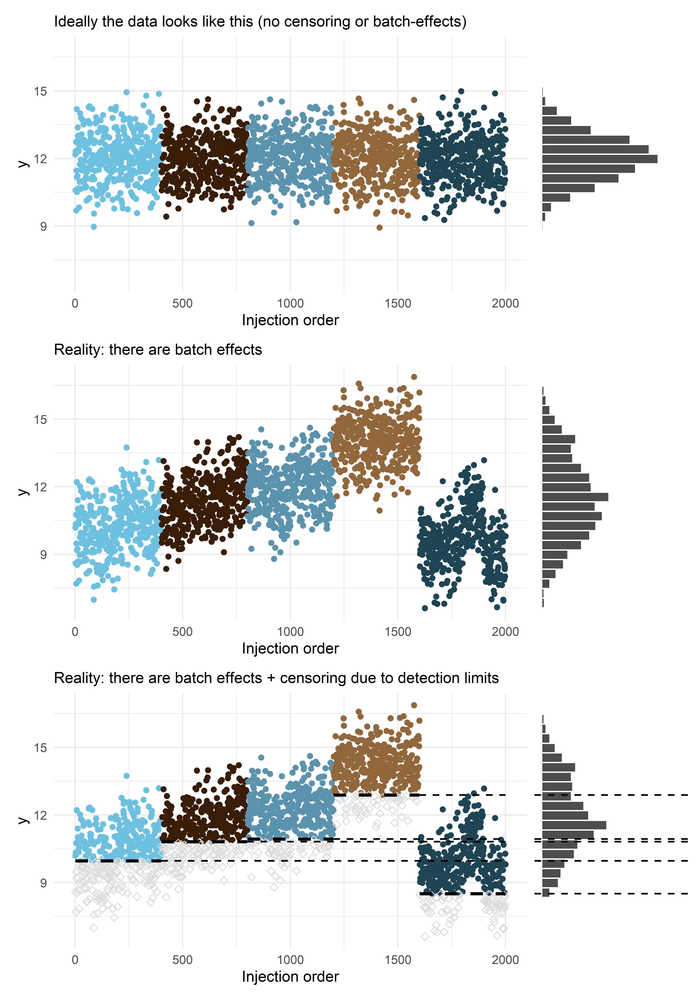
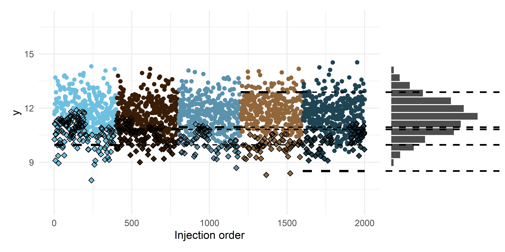
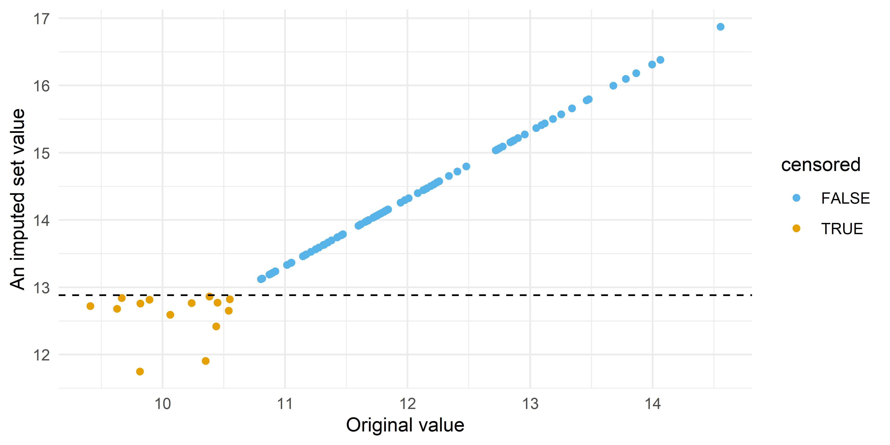
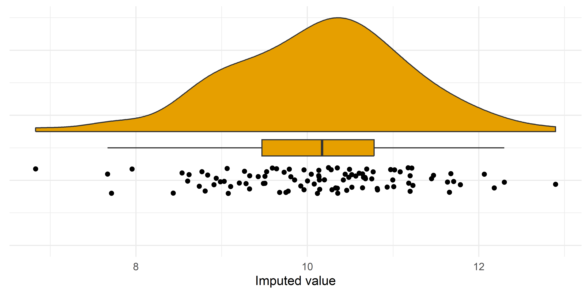

![]()
n <- 2000
samples_p_batch <- 400
samples_p_plate <- 100
nr_batches <- n/samples_p_batch
nr_plates <- nr_batches * (samples_p_batch/samples_p_plate)
mu <- 12
sd_batch <- 1.5
sd_plate <- 0.5
sd <- 1
b_1 <- 0.1
set.seed(1234)
x <- rnorm(n)
re_batch <- rep(rnorm(nr_batches, 0, sd_batch), each = samples_p_batch)
re_plate <- rep(rnorm(nr_plates, 0, sd_plate), each = samples_p_plate)
re <- re_batch + re_plate
y <- rlnorm(n, mu + x * b_1 + re, sd)
df <- tibble::tibble(y, x,
batch_id = as.factor(rep(1:nr_batches, each = samples_p_batch))) |>
dplyr::group_by(batch_id) |>
dplyr::mutate(lod = quantile(y, runif(1, 0.05, 0.5)),
censored = y <= lod,
y_obs = ifelse(censored, lod, y),
log_lod = log(lod),
log_y = log(y),
log_y_obs = log(y_obs),
plate_id = as.factor(rep(1:(samples_p_batch/samples_p_plate),
each = samples_p_plate))) |>
dplyr::ungroup() |>
dplyr::mutate(inj_order = dplyr::row_number()) |>
tidyr::unite(plate_nested_coding, c(batch_id, plate_id), remove = FALSE) Imputing nondetects and removing technical variation in left-censored metabolomic data
The field of environmental epidemiology has made significant investments in untargeted (also known as nontargeted) metabolomics over the past few years, to gain deeper insights into exposure levels, biological mechanisms, and their relationship to disease. These investments are starting to pay dividends by enabling larger studies, but this scale-up comes with its own challenges. With sample sizes growing substantially, processing all study samples in a single batch is no longer feasible, forcing analyses to span longer periods. These extended timeframes introduce greater variation in technical, non-biological factors that contaminate the data with unwanted variation. Additionally, as I’ve discussed in a previous post, this metabolomic data is often left-censored, creating further analytical challenges. In this post, I’ll share a method I developed that handles both the imputation of nondetects and the removal of technical variation in one and the same model1.
Technical variation in untargeted/nontargeted metabolomics
To illustrate the model, I will start with simulating some left-censored data that contains batch and plate effects (an example of technical variation). In this model, the study samples are processed in (100-well) plates that are nested within the batches. A proportion of these values will be censored. The censoring point (limit of detection) will differ per batch:
The plot below shows the technical variation (the different colors correspond to different batches) and the left-censored nature of the (untargeted) metabolic data. The data is left-censored because our instruments don’t have unlimited sensitivity. Due to left-censoring (dashed line), we observe only part of the distribution. Without the variation introduced by the different batches and plates the distribution would be much narrower. It’s also interesting to see that you can have an apparent drift over time that’s just the consequence of random variation between batches.
Code
library(ggplot2)
x_lab <- "Injection order"
y_lab <- "y"
sub_1 <- 'Ideally the data looks like this (no censoring or batch-effects)'
sub_2 <- 'Reality: there are batch effects'
sub_3 <- "Reality: there are batch effects + censoring due to detection limits"
# via https://github.com/easystats/see/blob/main/R/scale_color_bluebrown.R
bluebrown_colors_list <- c(
lightblue = "#6DC0E0",
darkbrown = "#391D07",
blue = "#5B93AE",
lightbrown = "#92673C",
darkblue = "#1F4454",
brown = "#61381A"
)
linewidth <- 1.1
nr_bins <- 25
axis_range_bins <- 420
df_plot <- df |>
dplyr::mutate(log_y_no_batch = log_y - re,
log_y_lab = ifelse(censored, NA, log_y_obs))
batch_lod_hline <- function(df_plot, nr_batches, samples_p_batch, linewidth, ...) {
batches <- sort(unique(df_plot$batch_id))
segments <- lapply(1:nr_batches, function(i) {
batch <- batches[i]
batch_data <- df_plot[df_plot$batch_id == batch, ]
lod_value <- unique(batch_data$log_lod)
x_start <- (i-1) * samples_p_batch + 1
x_end <- i * samples_p_batch
list(
geom_segment(aes(y = lod_value, yend = lod_value, x = x_start, xend = x_end),
linewidth = linewidth, ...),
geom_segment(aes(y = lod_value, yend = lod_value, x = x_end, xend = max(df_plot$inj_order)),
linewidth = linewidth - 0.5, ...)
)
})
return(do.call(list, unlist(segments, recursive = FALSE)))
}
p01a <- df_plot |>
ggplot(aes(x = inj_order, y = log_y_no_batch, color = batch_id)) +
geom_point() +
ylim(c(min(df$log_y), max(df$log_y))) +
scale_color_manual(values = unname(bluebrown_colors_list)) +
theme_minimal() +
theme(legend.position = 'none') +
labs(x = x_lab, y = y_lab, subtitle = sub_1)
p02a <- df_plot |>
ggplot(aes(x = inj_order, y = log_y, color = batch_id)) +
geom_point() +
ylim(c(min(df$log_y), max(df$log_y))) +
scale_color_manual(values = unname(bluebrown_colors_list)) +
theme_minimal() +
theme(legend.position = 'none') +
labs(x = x_lab, y = y_lab, subtitle = sub_2)
p03a <- df_plot |>
ggplot(aes(x = inj_order, y = log_y_lab, color = batch_id)) +
geom_point() +
geom_point(data = subset(df_plot, censored),
aes(x = inj_order, y = log_y), color = '#dbdbdb', shape = 5) +
batch_lod_hline(df_plot, nr_batches, samples_p_batch,
linewidth = linewidth, linetype = 'dashed', color = 'black') +
ylim(c(min(df$log_y), max(df$log_y))) +
scale_color_manual(values = unname(bluebrown_colors_list)) +
theme_minimal() +
theme(legend.position = 'none') +
labs(x = x_lab, y = y_lab, subtitle = sub_3)
p01b <- df_plot |>
ggplot(aes(x = log_y_no_batch)) +
geom_histogram(bins = nr_bins, fill = 'black', alpha = 0.7, color = 'white') +
xlim(c(min(df$log_y), max(df$log_y))) +
ylim(c(0, axis_range_bins)) +
coord_flip() +
theme_void()
p02b <- df_plot |>
ggplot(aes(x = log_y)) +
geom_histogram(bins = nr_bins, fill = 'black', alpha = 0.7, color = 'white') +
xlim(c(min(df$log_y), max(df$log_y))) +
ylim(c(0, axis_range_bins)) +
coord_flip() +
theme_void()
p03b <- df_plot |>
ggplot(aes(x = log_y_lab)) +
geom_histogram(bins = nr_bins, fill = 'black', alpha = 0.7, color = 'white') +
geom_vline(aes(xintercept = log_lod), linetype = 'dashed', linewidth = linewidth - 0.5) +
xlim(c(min(df$log_y), max(df$log_y))) +
ylim(c(0, axis_range_bins)) +
coord_flip() +
theme_void()
library(patchwork)
p01 <- p01a + p01b + plot_layout(ncol = 2, nrow = 1, widths = c(3, 1))
p02 <- p02a + p02b + plot_layout(ncol = 2, nrow = 1, widths = c(3, 1))
p03 <- p03a + p03b + plot_layout(ncol = 2, nrow = 1, widths = c(3, 1))
p01 / p02 / p03 
The status quo of imputation and technical variation adjustment
As I tried to illustrate using these plots, technical variation and left-censoring due to limits of detection (LOD) can be significant hurdles in metabolomics analysis. Yet, read method sections in the literature, and you’ll often find they’re treated like an afterthought. If addressed at all, methods sections will often only briefly state: ‘batch effects were removed using ComBat’ (despite ComBat fundamentally ignoring the censored nature of data below the LOD) or ‘data was imputed using methods X or Y’ (referencing imputation techniques like those by Lubin et al. (2004). or Lazar et al. (2016) which focus solely on left-censoring without inherently handling batch effects).
Furthermore, these references to ‘foundational’ imputation methods (like those by Lubin et al. (2004) or Lazar et al. (2016)) typically lack specifics on the exact imputation model; they neither detail which variables were included in the current study’s imputation nor do the original papers offer clear guidance on which should be included (because it wasn’t the goal of those papers). However, this is important for the analyst and the reader to know, as imputation models and the models for the subsequent analysis need to be congenial – meaning the imputation must account for the relationships you intend to study later. The variables included in imputation can matter greatly!
Why a unified model is better
Moreover, I will argue that the imputation and technical variation adjustment is best done in one and the same model, because the technical variation and left-censoring are often intertwined. Namely, the same technical factors causing batch-to-batch (or plate-to-plate) shifts in metabolite levels can also influence instrument sensitivity or baseline noise, thereby changing the effective LOD for different batches. This means that you cannot obtain an unbiased estimate of the technical variation without modeling the left-censoring, or the left-censoring (imputes) without modeling the the technical variation.
In other words, if you adjust for batch effects before imputation (e.g., using methods like ComBat that ignore censoring), you are applying adjustments to data that either contains arbitrary placeholders for non-detects (like LOD/2) or simply ignores the information that the true value is below a certain batch-specific threshold. This distorts the estimation of the batch effect itself. And the higher proportion of nondetects, the worse this bias can get.
One might also consider a seemingly pragmatic two-step approach: first, perform multiple imputation using a model that accounts for batch-specific LODs and includes batch and plate effects (perhaps as fixed effects2); second, fit a separate mixed model to each imputed dataset to estimate and remove these batch effects. However, this sequential process introduces several statistical challenges compared to a unified model:
- Treating batch effects as fixed during imputation (often a limitation of available software for censored models) but then as random during the adjustment step creates a conceptual mismatch in how technical variation is modeled and removed.
- Estimating imputation parameters and batch effects sequentially can be less statistically efficient than a unified model where all parameters are estimated simultaneously, allowing information to be shared across all model components.
Therefore, a unified model that simultaneously estimates the technical variation and performs the imputation using batch-specific LOD information is better able to obtain unbiased estimates of both the true underlying metabolite levels and the relationships with outcomes or exposures. The brms model presented below is a way to implement such a unified model. Importantly, such a model, or any model that attempts to identify and remove technical variation, is contingent on sound experimental design; only with sound experimental design can we say that in expectation the batches and plates should have the same mean. If you don’t randomize the positions of the samples, supposed technical variation may be real biological variation.
A {brms} model
nr_imputations <- 100
m <- brms::brm(formula = log_y_obs | cens(left_cens) ~ 1 + x + (1|batch_id/plate_nested_coding),
data = df |> dplyr::mutate(left_cens = censored * -1),
cores = 4, seed = 2025, refresh = 1000,
backend = 'cmdstanr')Running MCMC with 4 parallel chains...
Chain 1 Iteration: 1 / 2000 [ 0%] (Warmup)
Chain 2 Iteration: 1 / 2000 [ 0%] (Warmup)
Chain 3 Iteration: 1 / 2000 [ 0%] (Warmup)
Chain 4 Iteration: 1 / 2000 [ 0%] (Warmup)
Chain 1 Iteration: 1000 / 2000 [ 50%] (Warmup)
Chain 1 Iteration: 1001 / 2000 [ 50%] (Sampling)
Chain 2 Iteration: 1000 / 2000 [ 50%] (Warmup)
Chain 2 Iteration: 1001 / 2000 [ 50%] (Sampling)
Chain 3 Iteration: 1000 / 2000 [ 50%] (Warmup)
Chain 3 Iteration: 1001 / 2000 [ 50%] (Sampling)
Chain 4 Iteration: 1000 / 2000 [ 50%] (Warmup)
Chain 4 Iteration: 1001 / 2000 [ 50%] (Sampling)
Chain 3 Iteration: 2000 / 2000 [100%] (Sampling)
Chain 3 finished in 60.5 seconds.
Chain 1 Iteration: 2000 / 2000 [100%] (Sampling)
Chain 1 finished in 61.0 seconds.
Chain 2 Iteration: 2000 / 2000 [100%] (Sampling)
Chain 2 finished in 63.4 seconds.
Chain 4 Iteration: 2000 / 2000 [100%] (Sampling)
Chain 4 finished in 66.4 seconds.
All 4 chains finished successfully.
Mean chain execution time: 62.8 seconds.
Total execution time: 66.6 seconds.total_nr_draws <- brms::ndraws(m)
samples_to_draw <- sort(sample(total_nr_draws, nr_imputations))
sigma_draws <- as.data.frame(m, variable = c("sigma"), draw = samples_to_draw) |> dplyr::pull()
# do not include technical variation in draws (= implicitly removing it)
mu_draws <- brms::posterior_linpred(m, re_formula = NA, draw_ids = samples_to_draw) |> t()
re_draws <- brms::posterior_linpred(m, re_formula = NULL, draw_ids = samples_to_draw) -
brms::posterior_linpred(m, re_formula = NA, draw_ids = samples_to_draw)
re_draws <- t(re_draws)
imputed_sets <- matrix(nrow = length(y), ncol = nr_imputations)
for(i in 1:nr_imputations) {
mu <- mu_draws[, i]
sd <- sigma_draws[i]
batch_effect <- re_draws[, i]
lod_adjusted <- df[['log_lod']] - batch_effect
# draw values below lod
## what percentiles belong to start with these params
unif_lower <- pnorm(-Inf, mu, sd)
unif_upper <- pnorm(lod_adjusted, mu, sd)
## draw random percentiles between lower and upper
rand_perc_interval <- runif(length(mu), unif_lower, unif_upper)
## get value belonging to percentile
imputes <- qnorm(rand_perc_interval, mu, sd)
# remove technical variation from detected values
y_adjusted <- df[['log_y_obs']] - batch_effect
imputed_sets[,i] <- ifelse(df[['censored']], imputes, y_adjusted)
}
r <- tibble::as_tibble(imputed_sets)Below we see that the model has indeed recovered the parameters of the data generating process. The imputations are based on these parameters.
summary(m) Family: gaussian
Links: mu = identity; sigma = identity
Formula: log_y_obs | cens(left_cens) ~ 1 + x + (1 | batch_id/plate_nested_coding)
Data: dplyr::mutate(df, left_cens = censored * -1) (Number of observations: 2000)
Draws: 4 chains, each with iter = 2000; warmup = 1000; thin = 1;
total post-warmup draws = 4000
Multilevel Hyperparameters:
~batch_id (Number of levels: 5)
Estimate Est.Error l-95% CI u-95% CI Rhat Bulk_ESS Tail_ESS
sd(Intercept) 1.98 0.77 0.98 3.96 1.00 1647 1743
~batch_id:plate_nested_coding (Number of levels: 20)
Estimate Est.Error l-95% CI u-95% CI Rhat Bulk_ESS Tail_ESS
sd(Intercept) 0.60 0.13 0.41 0.89 1.00 1333 2191
Regression Coefficients:
Estimate Est.Error l-95% CI u-95% CI Rhat Bulk_ESS Tail_ESS
Intercept 11.49 0.86 9.80 13.26 1.00 1791 2050
x 0.07 0.02 0.02 0.11 1.00 5030 2630
Further Distributional Parameters:
Estimate Est.Error l-95% CI u-95% CI Rhat Bulk_ESS Tail_ESS
sigma 1.01 0.02 0.97 1.05 1.00 4824 2472
Draws were sampled using sample(hmc). For each parameter, Bulk_ESS
and Tail_ESS are effective sample size measures, and Rhat is the potential
scale reduction factor on split chains (at convergence, Rhat = 1).Visually, we can plot one of the imputed sets, and we can see that it fits well with the ideal data distribution that has the technical variation removed and the nondetects imputed. We imputed multiple times to represent and capture the uncertainty around the exact value of the nondetects3. We can also see that some of the observed values are now under the the original limit of detection. This is because – according to our model – these observations would have been nondetects in a ‘usual’ batch. And vice versa, there are some nondetects that would have been observed in a ‘usual’ batch and are now above the original LOD.
Code
df_imputes <- dplyr::bind_cols(df, r)
p_a <- df_imputes |>
ggplot(aes(inj_order, V2)) +
scale_color_manual(values = unname(bluebrown_colors_list)) +
geom_point(aes(color = batch_id)) +
geom_point(data = subset(df_imputes, censored),
aes(x = inj_order, y = V2), shape = 5) +
labs(x = x_lab, y = y_lab) +
batch_lod_hline(df_imputes, nr_batches, samples_p_batch,
linewidth = linewidth, linetype = 'dashed') +
ylim(c(min(df$log_y), max(df$log_y))) +
theme_minimal() +
theme(legend.position = 'none')
p_b <- df_imputes |>
ggplot(aes(x = V2)) +
geom_histogram(bins = nr_bins, fill = 'black', alpha = 0.7, color = 'white') +
xlim(c(min(df$log_y), max(df$log_y))) +
ylim(c(0, axis_range_bins)) +
geom_vline(aes(xintercept = log_lod), linetype = 'dashed', linewidth = linewidth - 0.3) +
coord_flip() +
theme_void()
p_a + p_b + plot_layout(ncol = 2, nrow = 1, widths = c(3, 1))
And if we plot the values from an imputed set vs the original values we see the increased uncertainty in values below the LOD:
Code
df_imputes |>
dplyr::filter(plate_nested_coding == '4_4') |>
ggplot(aes(V2, log_y, color = censored)) +
geom_point() +
geom_hline(aes(yintercept = log_lod), linetype = 'dashed') +
see::scale_color_okabeito(order = c(2,1)) +
labs(x = 'Original value', y = 'An imputed set value') +
theme_minimal()
We can also show this by plotting the posterior (100 draws) of a single, imputed, data point below the LOD:
Code
library(magrittr)
df_imputes|>
tidyr::pivot_longer(starts_with('V')) |>
dplyr::filter(censored) %>%
dplyr::filter(inj_order == sample(unique(.$inj_order), 1)) |>
ggplot(aes(x = 1, y = value, fill = censored)) +
ggrain::geom_rain(rain.side = 'r') +
coord_flip() +
see::scale_fill_okabeito(order = c(1,2)) +
labs(y = 'Imputed value') +
guides(fill = 'none') +
theme_minimal() +
theme(axis.title.y = element_blank(),
axis.text.y = element_blank(), axis.ticks.y = element_blank())
Implications
Unfortunately, I think this intertwined nature of nondetects and batch effects also means that your technical variation adjustment needs to be bespoke; you cannot do this imputation and ‘denoising’ once for your dataset and be done with it (if you care to this degree about bias). In theory, you could build the richest possible imputation model (and thus technical variation removal model) that is congenial with the most complex analysis that you would like to do and be done with it. In practice, this would be very hard with the amount of times a dataset is reanalysed by different analysts and the near certainty of missing values for the other variables in a rich imputation model. It will be even harder to create an congenial dataset when a mixture is the topic of interest and the dataset contains many left-censored features, because you would need to impute in two variables simultaneously and there’s no (easy) way to fit a multivariate left-censored model 4.
One potential way around this intertwined nature may be using the pooled QC samples for the batch adjustment using some kind of LOESS fit across the injection order. However, (1) labs do not always deliver information on QCs (2) there are less QA samples than study samples and as such there’s less data to inform such a model (3) readily available LOESS models do not take left-censoring into account. More importantly, it also doesn’t easily incorporate other covariates in the adjustment process which risks removing real biological variation and potentially failing to capture that for example cases are more often censored. Such a LOESS approach also still separates batch correction from the imputation of study samples, failing to address this interdependence between batch-specific LODs and the imputation process itself.
Possible extensions
Sometimes there’s also drift within a plate or a batch. One possible way to model this is by adding a random slope for injection order within a batch or plate. The code from above readily supports this, because the code assumes all the random effects are nuisance variation. Although, I think that such more complicated models are much harder to fit so you may want to represent this drift in another way. Maybe using some fixed effects5 and then remove this from the imputations and adjustment manually using some model.matrix() operation.
One final point that I want to make on these models, is on the assumption of a multiplicative error term – here made by the log transformation – in metabolomic data. It’s a useful model in the sense that it permits only positive values and it is in line with our idea of the data generation process. Namely, it is plausible that the true error structure arises from such a multiplicative process, because measured intensity/concentration can be thought of as a function of duration of exposure \(\times\) number of times exposed. However, in a lognormal distribution the error is also smaller for smaller values. And this is of course opposite of the limit of detection idea. If the error were indeed smaller for smaller values there would be no limit of detection! I hope the multiple versions of the imputed dataset at least overcome this partially. Senn, Holford, and Hockey (2012) mention that realistic likelihood models could consider a complex mixture of true concentration and error measurement models, or model the mean and variance structures separately. While I always like to think about the ideal model, I think for large scale metabolomics where you often have to fit this model to thousands of features this is not feasible.
References
Lazar, Cosmin, Laurent Gatto, Myriam Ferro, Christophe Bruley, and Thomas Burger. 2016. “Accounting for the Multiple Natures of Missing Values in Label-Free Quantitative Proteomics Data Sets to Compare Imputation Strategies.” Journal of Proteome Research 15 (4): 1116–25. https://doi.org/10.1021/acs.jproteome.5b00981.
Lubin, Jay H., Joanne S. Colt, David Camann, Scott Davis, James R. Cerhan, Richard K. Severson, Leslie Bernstein, and Patricia Hartge. 2004. “Epidemiologic Evaluation of Measurement Data in the Presence of Detection Limits.” Environmental Health Perspectives 112 (17): 1691–96. https://doi.org/10.1289/ehp.7199.
Senn, Stephen, Nick Holford, and Hans Hockey. 2012. “The Ghosts of Departed Quantities: Approaches to Dealing with Observations Below the Limit of Quantitation.” Statistics in Medicine 31 (30): 4280–95. https://doi.org/10.1002/sim.5515.
Footnotes
If your research question pertains directly to the exposure or metabolite level itself – rather than its relationship as a predictor for an outcome – then imputation is not necessary of course, because you can directly use the fitted left-censored model.↩︎
Fast, robust, frequentist left-censored multilevel models are not really possible/available.↩︎
In discussions I get the sense that many people think that the goal of imputation in metabolomics is to get as close as possible to the value that we would have observed with unlimited instrument sensitivity. While that’s welcome, for valid downstream inference with censored data it’s more important to accurately represent the uncertainty associated with those unobserved values.↩︎
I think some kind of Gibbs sampler or some chained equation is the best we can do.↩︎
I’m not sure what’s better (in this setup): a model with random slopes that possibly doesn’t fully converge or some 20 fixed effect interaction terms (with potentially some sparsity inducing horseshoe or LASSO priors). I guess putting (very) strong priors on the random slopes is the most logical option.↩︎
Citation
BibTeX citation:
@online{oosterwegel2025,
author = {Oosterwegel, Max J.},
title = {Imputing Nondetects and Removing Technical Variation in
Left-Censored Metabolomic Data},
date = {2025-04-28},
url = {https://maxoosterwegel.com/blog/impute-and-remove-technical-variation-metabolomics/},
doi = {placeholder},
langid = {en}
}
For attribution, please cite this work as:
Oosterwegel, Max J. 2025. “Imputing Nondetects and Removing
Technical Variation in Left-Censored Metabolomic Data.” April 28,
2025. https://doi.org/placeholder.